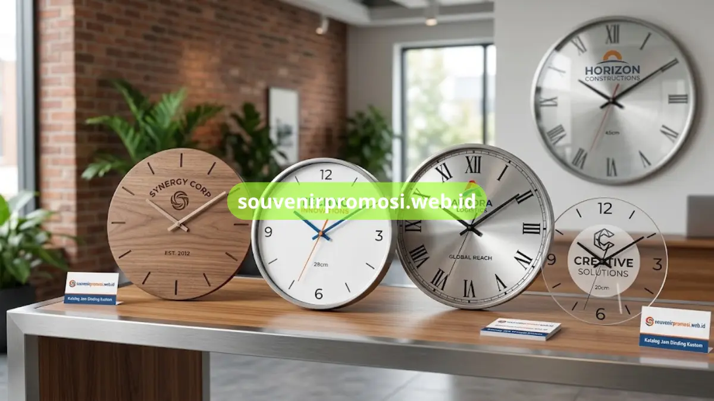
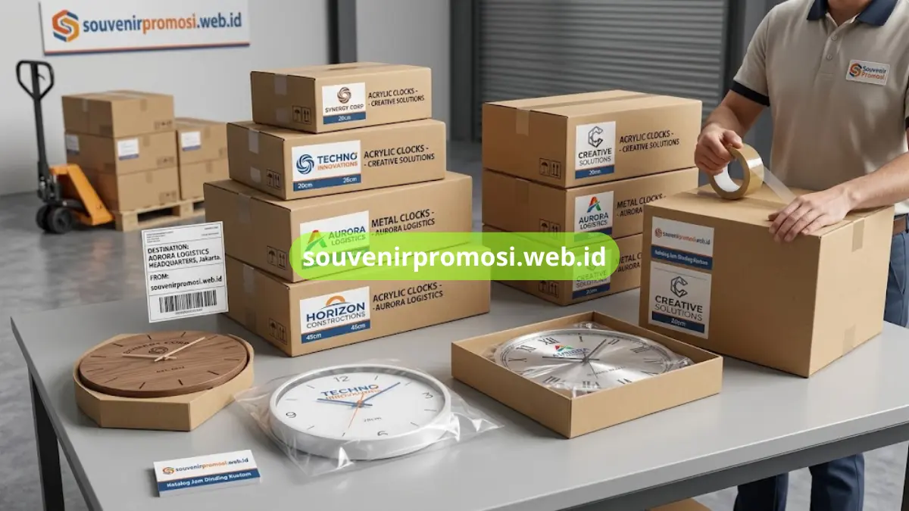

Spesifikasi jam dinding custom untuk souvenir promosi perusahaan mencakup pilihan bahan dial, ukuran diameter, jenis mesin jam, serta teknik cetak logo yang digunakan. Setiap elemen ini menentukan tampilan akhir, daya tahan, dan kesan yang ingin ditampilkan perusahaan melalui souvenirnya.
Katalog Souvenir Promosi menyediakan kombinasi spesifikasi yang dapat disesuaikan dengan kebutuhan dan budget setiap perusahaan.
Poin Penting
- Bahan dial tersedia dalam pilihan akrilik, kayu, metal, dan kombinasi kaca.
- Ukuran diameter mulai dari 20 cm hingga di atas 40 cm untuk area publik.
- Mesin jam menggunakan sistem quartz yang umum dipakai pada produk custom.
- Teknik cetak logo meliputi UV print, sublimasi, dan laser engraving.
- Semua spesifikasi dapat dikonsultasikan langsung melalui tim Souvenir Promosi.
Bahan Dial yang Tersedia untuk Jam Dinding Custom
Bahan dial akrilik umumnya dipilih karena permukaannya rata, ringan, dan menghasilkan cetak logo dengan warna tajam. Ketebalan akrilik yang biasa digunakan berkisar 3 mm hingga 5 mm agar dial tetap kokoh saat dipasang mesin jam di bagian belakang.
Bahan kayu, baik kayu solid maupun MDF berlapis veneer, memberikan tampilan lebih premium dengan tekstur alami pada permukaan. Bahan ini sering dipilih untuk souvenir yang ditujukan kepada klien di level manajemen atau sebagai hadiah kerja sama jangka panjang.
Bahan metal atau kombinasi metal dan kaca digunakan untuk kebutuhan yang menonjolkan kesan kokoh dan industrial, umumnya diminati perusahaan di sektor manufaktur, konstruksi, dan otomotif.
Apakah Bahan Akrilik Lebih Tahan Lama dari Kertas atau Karton?
Ya, secara umum bahan akrilik lebih tahan terhadap kelembapan dan perubahan warna dibanding bahan kertas atau karton, sehingga lebih sesuai untuk souvenir yang digunakan dalam jangka waktu panjang.
Ukuran Diameter Dial Jam Dinding Custom
Ukuran dial yang paling umum dipesan untuk souvenir korporat berada pada rentang 25 cm hingga 30 cm, cukup proporsional untuk dipasang di ruang kerja, ruang tunggu, maupun meja resepsionis. Untuk kebutuhan area publik seperti lobi gedung atau pabrik, tersedia ukuran di atas 40 cm agar logo tetap terlihat jelas dari jarak yang lebih jauh.
Ukuran dial yang lebih kecil, sekitar 20 cm, biasa dipilih untuk souvenir personal yang dibagikan dalam jumlah besar kepada karyawan atau peserta acara.
Ukuran Berapa yang Cocok untuk Souvenir Ruang Kerja Standar?
Ukuran 25-30 cm umumnya paling sesuai untuk ruang kerja standar karena proporsional terhadap dinding kantor pada umumnya tanpa terlihat terlalu besar atau terlalu kecil.
Jenis Mesin Jam yang Digunakan pada Produk Custom
Mesin jam dinding custom umumnya menggunakan sistem quartz dengan pergerakan jarum yang senyap, sehingga tidak mengganggu suasana ruang kerja atau ruang meeting. Sistem ini juga dikenal hemat daya karena hanya membutuhkan baterai standar ukuran AA sebagai sumber tenaga.

Teknik Cetak Logo pada Jam Dinding Custom
Teknik UV print digunakan untuk mencetak logo langsung pada permukaan dial dengan hasil warna yang tajam dan tahan gores.
Teknik sublimasi lebih umum digunakan pada dial berbahan metal berlapis, menghasilkan warna yang menyatu dengan permukaan. Sementara laser engraving dipilih untuk bahan kayu, menghasilkan detail logo yang terukir dan tahan lama meski tanpa tinta warna.
Pemilihan spesifikasi bahan, ukuran, dan teknik cetak jam dinding custom sebaiknya disesuaikan dengan tujuan penempatan souvenir dan kesan brand yang ingin ditampilkan perusahaan. Lihat kembali bahan dial yang tersedia di atas sebagai acuan sebelum menentukan pilihan.
Tim Souvenir Promosi siap membantu menentukan kombinasi spesifikasi paling sesuai dengan kebutuhan Anda. Kunjungi souvenirpromosi.web.id untuk melihat katalog lengkap spesifikasi jam dinding custom dan ajukan pemesanan sekarang juga.